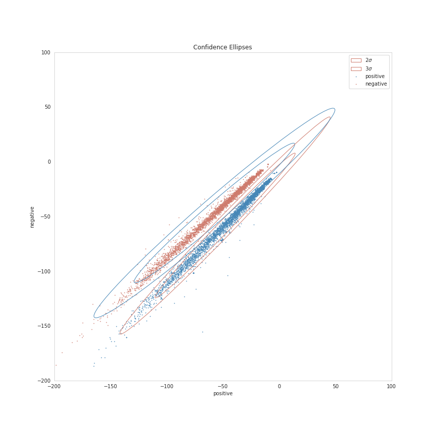

Visualizing Naive Bayes
Table of Contents
Beginning
In the previous post I made a class-based version of the Naive Bayes Classifier for tweets. For this post I'm going to plot the model values. It turns out that we need to get at some values that the previous implementations hide so I'm going to re-calculate the likelihoods from scratch rather than alter the previous code.
Set Up
Imports
# python
from argparse import Namespace
from functools import partial
from pathlib import Path
import os
import pickle
# from pypi
from dotenv import load_dotenv
from matplotlib.patches import Ellipse
import holoviews
import hvplot.pandas
import matplotlib.pyplot as pyplot
import matplotlib.transforms as transforms
import numpy
import pandas
import seaborn
# this project
from neurotic.nlp.twitter.counter import WordCounter
# graeae
from graeae import EmbedHoloviews
The Dotenv
env_path = Path("posts/nlp/.env")
assert env_path.is_file()
load_dotenv(env_path)
Plotting
SLUG = "visualizing-naive-bayes"
Embed = partial(EmbedHoloviews,
folder_path=f"files/posts/nlp/{SLUG}", create_folder=False)
plot_path = Path(os.environ["TWITTER_PLOT"])
assert plot_path.is_file()
with plot_path.open("rb") as reader:
Plot = pickle.load(reader)
seaborn.set_style("whitegrid", rc={"axes.grid": False})
FIGURE_SIZE = (12, 10)
The Data
train_raw = pandas.read_feather(
Path(os.environ["TWITTER_TRAINING_RAW"]).expanduser())
test_raw = pandas.read_feather(
Path(os.environ["TWITTER_TEST_RAW"]).expanduser()
)
print(f"Training: {len(train_raw):,}")
print(f"Testing: {len(test_raw):,}")
Training: 8,000 Testing: 2,000
The Word Counter
This is a class to clean and tokenize the tweets and build up a Counter with the word counts.
counter = WordCounter(train_raw.tweet, train_raw.label)
Constants
Sentiment = Namespace(
positive = 1,
negative = 0,
)
Middle
Log Likelihoods
Calculating the Likelihoods
The first thing to plot are the log-likelihoods for positive and negative tweets. When I implemented the Naive Bayes Classifier I took advantage of the fact that we're making a binary classifier and took the odds ratio when making predictions, but for our plot we're going to need to undo the division and plot the numerator against the denominator.
\begin{align} log \frac{P(tweet|pos)}{P(tweet|neg)} &= log(P(tweet|pos)) - log(P(tweet|neg)) \\ positive = log(P(tweet|pos)) &= \sum_{i=0}^{n}{log P(W_i|pos)}\\ negative = log(P(tweet|neg)) &= \sum_{i=0}^{n}{log P(W_i|neg)}\\ \end{align}So, let's get the log-likelihoods.
COUNTS = counter.counts
positive_loglikelihood = {}
negative_loglikelihood = {}
log_ratio = {}
all_positive_words = sum(
(counts[(token, sentiment)] for token, sentiment in COUNTS
if sentiment == Sentiment.positive))
all_negative_words = sum(
(counts[(token, sentiment)] for token, sentiment in COUNTS
if sentiment == Sentiment.negative))
vocabulary = {key[0] for key in COUNTS}
vocabulary_size = len(vocabulary)
for word in vocabulary:
this_word_positive_count = COUNTS[(word, Sentiment.positive)]
this_word_negative_count = COUNTS[(word, Sentiment.negative)]
probability_word_is_positive = ((this_word_positive_count + 1)/
(all_positive_words + vocabulary_size))
probability_word_is_negative = ((this_word_negative_count + 1)/
(all_negative_words + vocabulary_size))
positive_loglikelihood[word] = numpy.log(probability_word_is_positive)
negative_loglikelihood[word] = numpy.log(probability_word_is_negative)
log_ratio[word] = positive_loglikelihood[word] - negative_loglikelihood[word]
So now we have our positive and negative log-likelihoods and I'll put them into a pandas DataFrame to make it easier to plot.
positive_document_likelihood = []
negative_document_likelihood = []
sentiment = []
for row in train_raw.itertuples():
tokens = counter.process(row.tweet)
positive_document_likelihood.append(sum(positive_loglikelihood.get(token, 0)
for token in tokens))
negative_document_likelihood.append(sum(negative_loglikelihood.get(token, 0)
for token in tokens))
sentiment.append(row.label)
features = pandas.DataFrame.from_dict(
dict(
positive = positive_document_likelihood,
negative = negative_document_likelihood,
sentiment=sentiment,
)
)
print(features.head())
positive negative sentiment
0 -26.305672 -33.940649 1
1 -30.909803 -37.634516 1
2 -42.936400 -33.403567 0
3 -15.983546 -25.501140 1
4 -107.899933 -99.191875 0
Plotting the Likelihoods
plot = features.hvplot.scatter(x="positive", y="negative", by="sentiment",
color=Plot.color_cycle, fill_alpha=0).opts(
title="Positive vs Negative",
width=Plot.width,
height=Plot.height,
fontscale=Plot.font_scale,
)
outcome = Embed(plot=plot, file_name="positive_vs_negative_sentiment")()
print(outcome)
It looks like the log likelihoods for the negatives are linearly separable.
Confidence Ellipses
Now we're going to plot a Confidence Region, which is a generalization of a confidence interval to higher dimensions. In this case we're going to create confidence ellipses. I'm not really sure about the details of the math to get them, but matplotlib has a page with a function to create a matplotlib plot for a confidence ellipse that I'm going to adapt.
The Ellipse Function
This is taken almost verbatim from matplotlib's page.
def confidence_ellipse(x, y, ax, n_std=3.0, facecolor='none', **kwargs):
"""
Create a plot of the covariance confidence ellipse of `x` and `y`
Parameters
----------
x, y : array_like, shape (n, )
Input data.
ax : matplotlib.axes.Axes
The axes object to draw the ellipse into.
n_std : float
The number of standard deviations to determine the ellipse's radiuses.
Returns
-------
matplotlib.patches.Ellipse
Other parameters
----------------
kwargs : `~matplotlib.patches.Patch` properties
"""
if x.size != y.size:
raise ValueError("x and y must be the same size")
cov = numpy.cov(x, y)
pearson = cov[0, 1]/numpy.sqrt(cov[0, 0] * cov[1, 1])
# Using a special case to obtain the eigenvalues of this
# two-dimensionl dataset.
ell_radius_x = numpy.sqrt(1 + pearson)
ell_radius_y = numpy.sqrt(1 - pearson)
ellipse = Ellipse((0, 0),
width=ell_radius_x * 2,
height=ell_radius_y * 2,
facecolor=facecolor,
**kwargs
)
# Calculating the stdandard deviation of x from
# the squareroot of the variance and multiplying
# with the given number of standard deviations.
scale_x = numpy.sqrt(cov[0, 0]) * n_std
mean_x = numpy.mean(x)
# calculating the stdandard deviation of y ...
scale_y = numpy.sqrt(cov[1, 1]) * n_std
mean_y = numpy.mean(y)
transf = transforms.Affine2D() \
.rotate_deg(45) \
.scale(scale_x, scale_y) \
.translate(mean_x, mean_y)
ellipse.set_transform(transf + ax.transData)
return ax.add_patch(ellipse)
figure, axis = pyplot.subplots(figsize = (12, 12))
positives = features[features.sentiment==Sentiment.positive]
negatives = features[features.sentiment==Sentiment.negative]
confidence_ellipse(positives.positive, positives.negative, axis, n_std=2,
label=r'$2\sigma$', edgecolor=Plot.red)
confidence_ellipse(negatives.positive, negatives.negative, axis, n_std=2, edgecolor=Plot.blue)
confidence_ellipse(positives.positive, positives.negative, axis, n_std=3,
label=r'$3\sigma$', edgecolor=Plot.red)
confidence_ellipse(negatives.positive, negatives.negative, axis, n_std=3, edgecolor=Plot.blue)
SIZE = 0.5
_ = positives.plot.scatter(x="positive", y="negative", s=SIZE, ax=axis, facecolors="none",
color=Plot.blue, label="positive")
negatives.plot.scatter(x="positive", y="negative", s=SIZE, ax=axis,
label="negative", color=Plot.red)
LIMITS = (-200, 100)
axis.set_xlim(LIMITS)
axis.set_ylim(LIMITS)
axis.legend()
axis.set_title("Confidence Ellipses")
figure.savefig("ellipses.png")

It's a bit squashed looking, since the results are so tight, but you can sort of see that the distributions are "left-skewed", with the points that fall outside of the \(3 \sigma\) range being the cases where the "positive" and "negative" values are both negative.